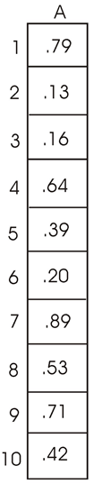
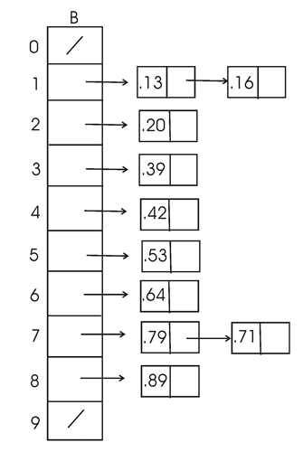
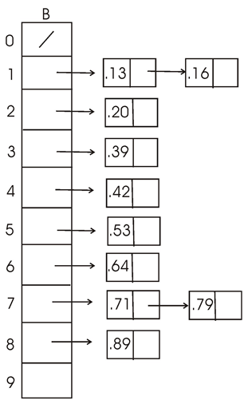
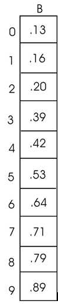
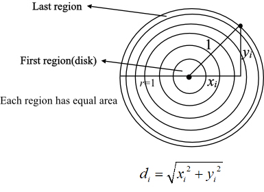
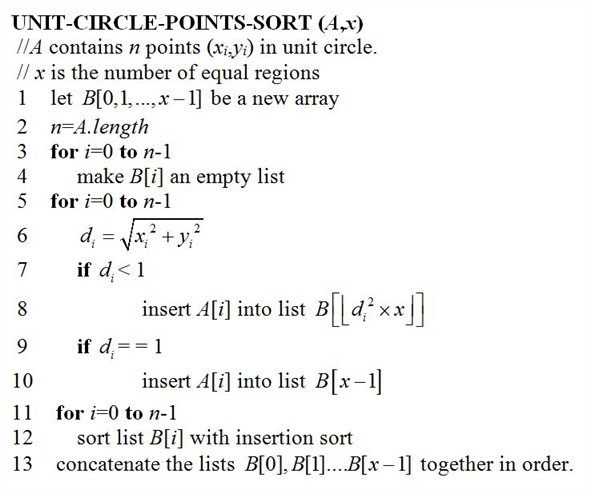

Operation of BUCKET-SORT for n=10:
Consider the input array A[1..10] as shown below:

The internal [0,1) is divided into 10 equal sized buckets such that bucket i contains values that fall in the half-open range [i/10,(i+1)/10].
• Bucket 0 will hold the values that fall in the half-open range [0, 0.1]. Bucket 1 will hold the values that are.
• Bucket 1 will hold the values that fall in the half-open range [0.1, 0.2]. Bucket 1 will hold the values that are.
• Bucket 2 will hold the values that fall in the half-open range [0.2, 0.3]. Bucket 2 will hold the values that are.
• Bucket 3 will hold the values that fall in the half-open range [0.3, 0.4]. Bucket 3 will hold the values that are.
• Bucket 4 will hold the values that fall in the half-open range [0.4, 0.5]. Bucket 4 will hold the values that are.
• Bucket 5 will hold the values that fall in the half-open range [0.5, 0.6]. Bucket 5 will hold the values that are.
• Bucket 6 will hold the values that fall in the half-open range [0.6, 0.7]. Bucket 6 will hold the values that are.
• Bucket 7 will hold the values that fall in the half-open range [0.7, 0.8]. Bucket 7 will hold the values that are.
• Bucket 8 will hold the values that fall in the half-open range [0.8, 0.9]. Bucket 8 will hold the values that are.
• Bucket 9 will hold the values that fall in the half-open range [0.9, 1]. Bucket 9 will hold the values that are.

Explanation:
• The value .79 is greater than 0.7 and less than 0.8. Hence, it falls into the bucket 7.
• The values .13 is greater than 0.1 and less than 0.2. Hence, it falls into the bucket 1.
• The values .16 is greater than 0.1 and less than 0.2. Hence, it falls into the bucket 1.
• The value .64 is greater than 0.6 and less than 0.7. Hence, it falls into the bucket 6.
• The value .39 is greater than 0.3 and less than 0.4. Hence, it falls into the bucket 3.
• The value .20 is equal to 0.2. Hence, it falls into the bucket 2.
• The value .89 is greater than 0.8 and less than 0.9. Hence, it falls into the bucket 8.
• The value .53 is greater than 0.5 and less than 0.6. Hence, it falls into the bucket 5.
• The value .71 is greater than 0.7 and less than 0.8. Hence, it falls into the bucket 7.
• The value .42 is greater than 0.4 and less than 0.5. Hence, it falls into the bucket 4.
According to the lines 7 and 8 of the algorithm BUCKET-SORT(A) given in the textbook, the buckets will contain the values as shown below:

Explanation:
• All the buckets contain only one value expect the buckets 1 and 7.
• The values of bucket 1 are already sorted.
• The values of bucket 7 are not sorted. So sort the values of bucket 7 using insertion sort.
Then the array B is as shown below:

Hence, the sorted array is .
Let X be a random variable that is equal to number of heads that appear when the coin is flipped twice.
Then the random variable X takes the following values:
Then distribution for the random variable X is as shown below:
The expected value of a random variable X(s) on a sample space S is as shown below:
The expected value of a random variable X(s) that is equal to number of heads that appear when the coin is flipped twice is as shown below:

Hence, the value of and.
Sorting points in unit circle using Bucket sort
• We are given n points in the unit circle. It is already known that a unit circle have radius of 1 and its center is the origin.
• It is given that the points must be uniformly distributed, such that the probability of finding a point in any region of the circle is proportional to the area of that region.
• Thus, to distribute the points uniformly, the total area of the circle must be divided into x regions or disks such that each region have the same area.
• Then, each point lies in any of the disk based on the distance from the origin.
• Since the given circle is unit circle, the radius r= 1. Thus the area of the unit circle.
Also, the distance of each point in the unit circle from the origin is
Now, split the area into x regions, each having area .

Calculating Bucket sizes such that the points are distributed uniformly:
• Assume that the radii of circles is .
Then the area of each region or disk is as follows:
• Since we divide the circle into x regions and the area of each region or disk must be , area of each region, .
• Then radius of each circle can be calculated as follows:
• Then
.
.
.
• Thus,
The points in the first region have the distance between 0 to .
The points in the second region have the distance between to .
And so on.
The points in the last region have the distance between to1.
Therefore create x buckets for the following half opened intervals:
• Now, insert the each point into corresponding buckets. The corresponding bucket can be calculated using the distance of the point as follows:
That is, each point is inserted into  .
.
• Now, the sorted points can be obtained by sorting each bucket and concatenating the buckets in the order of .
Algorithm:

• Obviously, the above sort reflects the uniform distribution of the points, since the area of all regions is equal.
• Since the above sort uses bucket-sort, the average-case
running time of the above sort is . Where
n is the number of points in the unit circle.
. Where
n is the number of points in the unit circle.